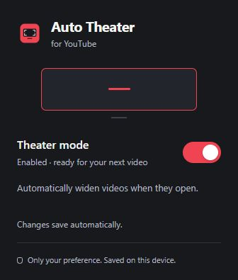
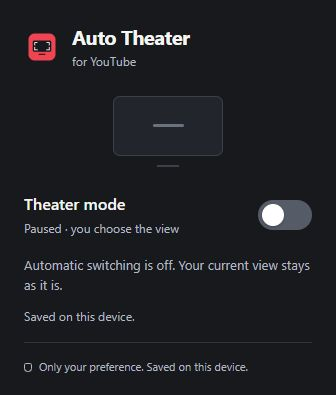

Your next video.
A wider view.
Automatically open YouTube videos
in theater mode.
One switch.
You're in control.
Pause automatic switching.
Keep the view you already chose.


Automatically open YouTube videos
in theater mode.
Pause automatic switching.
Keep the view you already chose.

